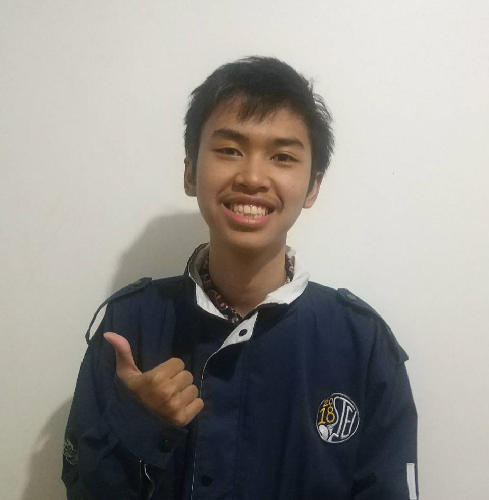

About Me!

Hello World! My name is Muhammad Hasan, I am 20 years old and I live and born in Bandung. I am currently a 3rd year Informatics students at Institut Teknologi Bandung (ITB). This is my blog page to help you know get better about me :)
About My activity!
I am currently focusing on honing my programming skill, especially in competitive programming, and I am currently the head of competitive programming at ITB for this year. I love problem solving and getting better at it, I train almost everyday if I have some spare time. My biggest goal is to one day get into the World Final of International Collegiate Programming Contest (ICPC). Other than focusing on doing competition stuff, I do some projects which is mostly just college assignments, that you probably won't care anyways. But in case you want to know, you could see some at my github page.
Hobby
My hobby is not that different as many others, I like watching YouTube and play some video games. I often get myself watching YouTube, I probably watch YouTube almost everyday for quite a decent hours. I love watching entertaintment and technology videos, it helps my day feel a little bit better. I also like to play video games, especially Nintendo games such as Pokemon, Mario, and Zelda. Well, now I don't do as much playing as when I was a kid or teenager though.